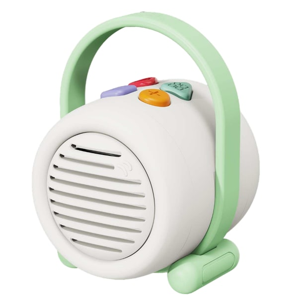
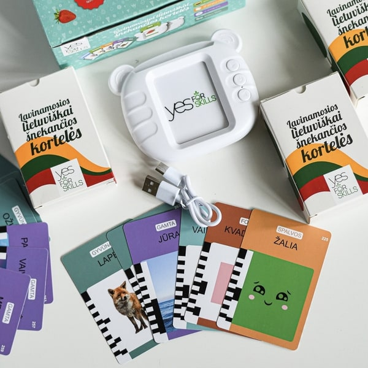
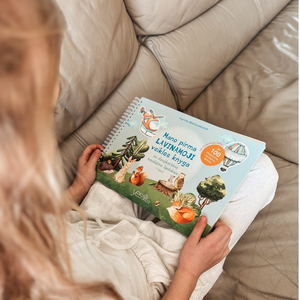
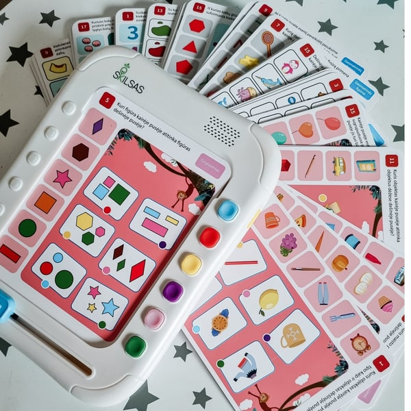

|
Labas! Šį vakarą kviečiu susirasti jaukų kampelį ir kartu pasiklausyti vienos pasakos. O jai pasibaigus dar truputį pabūti istorijoje: prisiminti veikėjus, pasijuokti iš jų nuotykių ar sugalvoti kitokią pabaigą. |
 | ŠĮVAKAR KLAUSOMĖS Garso kolonėlė SK1030 lietuviškų pasakų ir 30 dainų vienoje kolonėlėje. Išsirinkite, ko norisi klausytis šiandien. 49 € |
|
|
MAŽAS VAKARO RITUALAS Viena pasaka.
Trys maži žingsniai.| 01 | Išsirinkite istorijąLeisk vaikui pasirinkti, kurios pasakos šiandien norisi. | | 02 | Pasiklausykite kartuĮsitaisykite šalia. Jei kyla klausimų, stabtelėkite pasikalbėti. | | 03 | Pratęskite pokalbįPaklausk: „Kuris veikėjas tau labiausiai įsiminė?“ |
|
|
SMALSUMUI PRATĘSTI Kai norisi dar
vienos veiklosIstorija gali prasidėti ir nuo vieno žodžio, paveikslėlio ar klausimo. |
 | IŠ ŽODŽIO Į ISTORIJĄ Šnekančios kortelės SK9Išgirsk lietuvišką žodį ir pakartok. Pagal kortelės paveikslėlį kartu sugalvokite savo istorijos pradžią. 24 € |
|
 | PAVEIKSLĖLIAI PRAKALBA Pirma veiklos knygaDaugkartiniai lipdukai ir paveikslėliai kviečia kurti. Pasirinkite gyvūną ir papasakokite, kur jis keliauja. 30 € |
|
 | KLAUSYTI IR ATRASTI Logikos žaidimasIšklausyk lietuviškai įgarsintą užduotį ir surask atsakymą. Pasikalbėkite, kas padėjo jį atrasti. 39,20 € |
|
AUGAME LIETUVIŠKAI Pasaka baigėsi.
Pokalbis tęsiasi.Man svarbu, kad lietuviški žodžiai skambėtų kasdien: pasakoje, žaidime ir pokalbyje su tavimi. Tad pabaigai siūlau dar vieną klausimą: „O kas galėjo nutikti paskui?“ Leiskite vaizduotei pratęsti istoriją savaip. |
|
Šįvakar vietos
užteks ir pasakai.Su meile, Ingrida skilsas.lt |
labas@skilsas.lt MB SKILSAS
[[account.address]], [[account.city]], [[account.zipCode]], [[account.country]]
Šį laišką gavai, nes užsisakei SKILSAS naujienas. Keisti nuostatas · Atsisakyti naujienų |